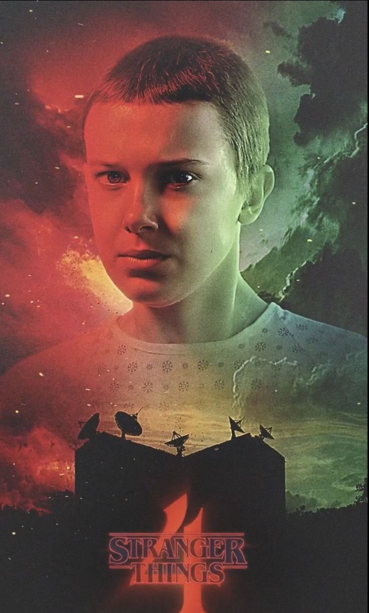
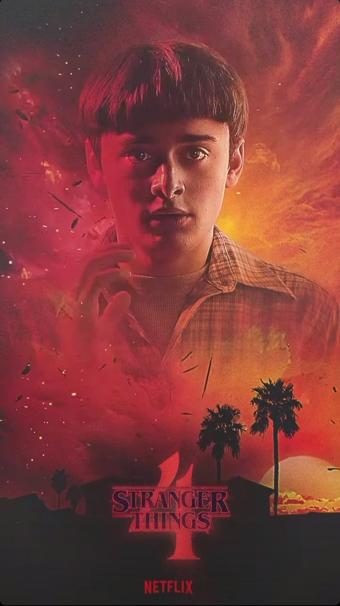
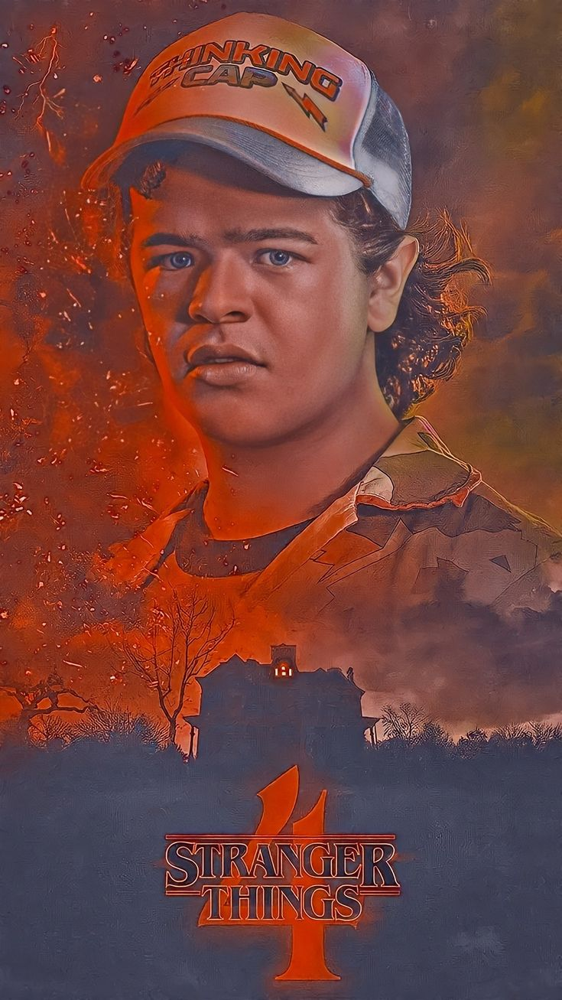
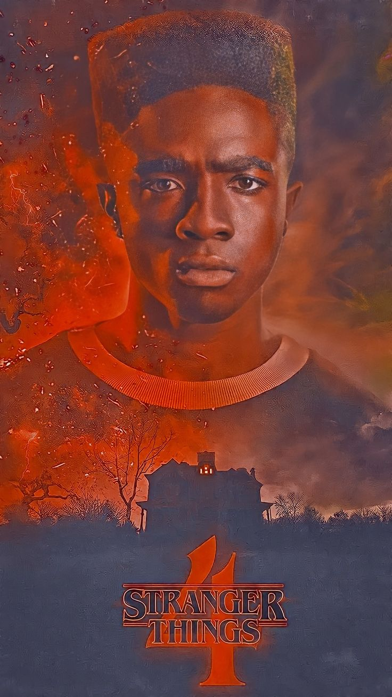
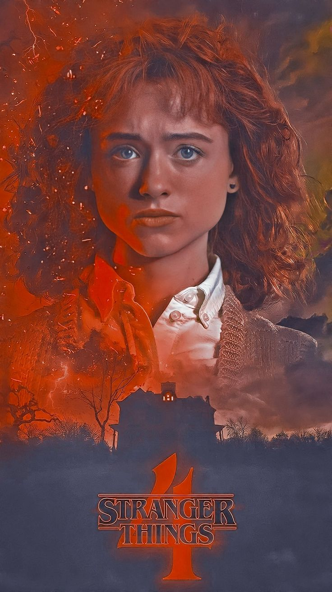
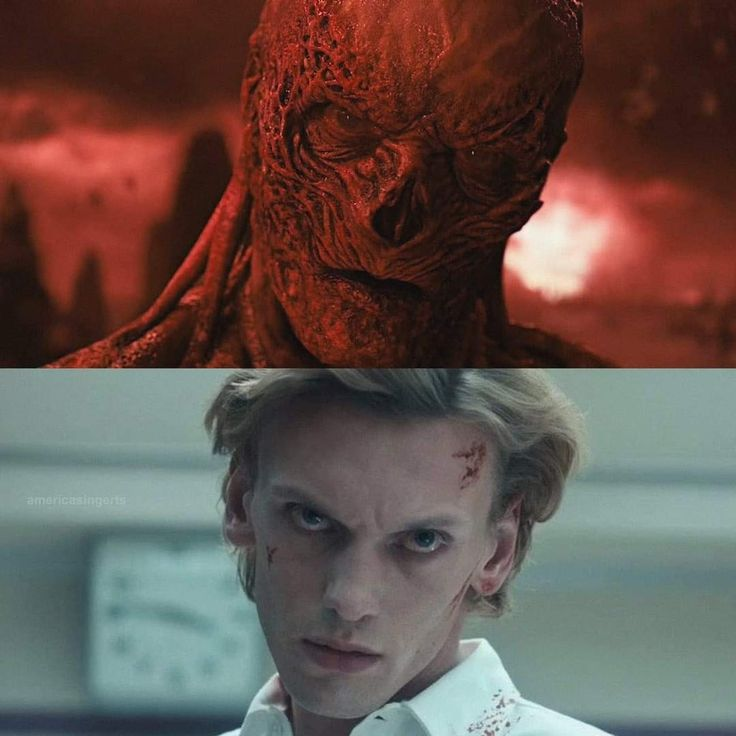

Stranger Things...1980-ci illərin Hawkins şəhərində, sirli bir paralel aləm və gizli güclərin ortaya çıxdığı qorxulu hadisələr....
Serial Haqqında
Stranger Things, 2016-cı ildə Netflix-də yayımlanmaya başlayan, 1980-ci illərin atmosferində qurulmuş bir ABŞ televiziya serialıdır. Serialın yaradıcıları Duffer Brothers (Matt və Ross Duffer) tərəfindən çəkilmişdir.
Hekayə, Indiana ştatının Hawkins şəhərində baş verir və ətrafında sirli hadisələrdən sonra itkin düşən bir uşağın axtarışını izləyir. Bu uşağın adı Will Byers-dir. Onun yoxa çıxması, şəhərdəki çoxsaylı paranormal hadisələrin başlamasına səbəb olur.
Stranger Things-in əsas xüsusiyyətlərindən biri 1980-ci illərdən olan pop mədəniyyətinə istinad etməsidir. Serialda sci-fi, horror və dram janrlarının qarışığı var, və bir çox başqa elementlərə də yer verilir, məsələn, paralel dünya (Upside Down), psixik qabiliyyətlər, başqa dünyalardan gələn canavarlara qarşı mübarizə və daha çoxu
Əsas Personajlar
Stranger Things serialında bir çox vacib və təsirli personaj mövcuddur. Onlar, serialın təbiətindəki paranormal hadisələrə, dostluq əlaqələrinə və mübarizələrə fərqli yanaşmalarla yanaşır.Serialın əsas qəhrəmanları, dostluq, güc və məhəbbət üzərində formalaşır. Bu personajlar serialın ruhunu təşkil edir:
Eleven - Gizli təcrübələrdən qaçan və telekinetik gücə sahib bir qız...
Mike Wheeler - Eleven ilə dostluq edən, qəhrəmanlıq edən gənc...
Dustin Henderson - Əyləncəli və ağıllı bir gənc...
Lucas Sinclair - Qrupun qoruyucu tərəfi...
Will Byers - Yoxa çıxan və "Upside Down" adlı paralel dünyada qorxunc təcrübələr yaşayan gənc...
Əsas Mövzular və Janr
Stranger Things serialı əsasən elmi fantastika, qorxu və drama janrlarında yer alır. Serial, 1980-ci illərin əvvəllərində baş verir və paralel dünyalar, psixik qabiliyyətlər və hökumət təcrübələri kimi paranormal hadisələri əhatə edir. Əsas mövzu, Will Byers adlı bir uşağın itkin düşməsi ilə başlayır və bu hadisə, şəhərdə baş verən qeyri-adi və qorxulu hadisələrin sirrini açmağa çalışan bir qrup gəncin ətrafında cərəyan edir.
Elmi Fantastika (Sci-Fi):Paralel dünyalar və psixik qabiliyyətlər serialın əsas elmi fantastika elementlərini təşkil edir.
Qorxu:"Upside Down" adlı paralel dünyada yaşayan qorxulu varlıqlar və atmosfer seriala qorxu əlavə edir.
Drama:Personajlar arasındakı dostluq və ailə münasibətləri, onların qarşılaşdıqları çətinliklər və daxili mübarizələr serialın dramatik tərəfini gücləndirir.
Əsas Mövzu: Serialın əsas mövzusu, paranormal hadisələrin, paralel dünya və təcrübələrin mərkəzindəki gizli hökumət təcrübələri və onların cəmiyyətə və şəhərə necə təsir etdiyinə yönəlir. Bu hadisələr, həm uşaqların, həm də böyüklərin həyatını dəyişir, və serialda dostluq, ailə bağları və cəsarət ön planda olur.Bütövlükdə, Stranger Things elmi fantastika, qorxu və dramın qarışığı olaraq, gərgin və emosional bir hekayə təqdim edir.
Filmin Poster və Şəkilləri

ElevenMike Wheeler

Will Byers

Dustin Henderson

Lucas SinclairMax Mayfield

Nancy Wheeler
Ən əsas Perseonajlar

Vecna (əsl adı ilə Henry Creel) ,
Stranger Things serialının dördüncü mövsümündə əsas antagonistdir. O, psixik güclərə sahib bir şəxsdir və kiçik yaşlarından bəri güclərini təhlükəli şəkildə istifadə edib. Hawkins şəhərinə köçdükdən sonra, Vecna, ailəsinin öldürülməsinə və bir çox digər dəhşətli hadisəyə səbəb olub.
Dr. Brennerin "Hawkins Labs"da apardığı tədqiqatlardan sonra, Henry, Eleven ilə qarşılaşıb və onun psixik gücləri ilə qarşıdurma yaşanıb. Vecna'nın gücləri insanları psixoloji olaraq manipulyasiya edərək onların ən qorxulu xatirələrini ortaya çıxarmaq və onları öldürməkdir. O, Upside Down dünyasına hakim olmaq və onu dünyaya yaymaq istəyir.
Vecna'nın gücləri və məqsədləri, serialın dördüncü mövsümündə daha da aydın olur və Eleven ilə baş verən qarşıdurmaların mərkəzində dayanır.
Eleven (əsl adıyla Jane Ives),
Stranger Things serialının baş qəhrəmanlarından biridir və çox güclü psixik qabiliyyətlərə sahib olan bir qızdır. Onun hekayəsi, ilk mövsümdəki əsas hadisələrlə bağlıdır. Eleven, Hawkins şəhərindəki "Hawkins National Laboratory"da bir eksperimentin nəticəsi olaraq doğulmuş və yetişdirilmişdir. O, bu laboratoriyada psixik güclərini inkişaf etdirmək üçün təcrübələrə məruz qalmış bir uşaqdır.Elevenin gücləri, onu çox təhlükəli bir varlıq edir və müxtəlif antagonistlər ona qarşı mübarizə aparmağa çalışır. O, həmçinin Upside Down dünyası ilə əlaqəli müxtəlif sirrləri açmağa başlayır və çox əhəmiyyətli bir rol oynayır.


.jpg)